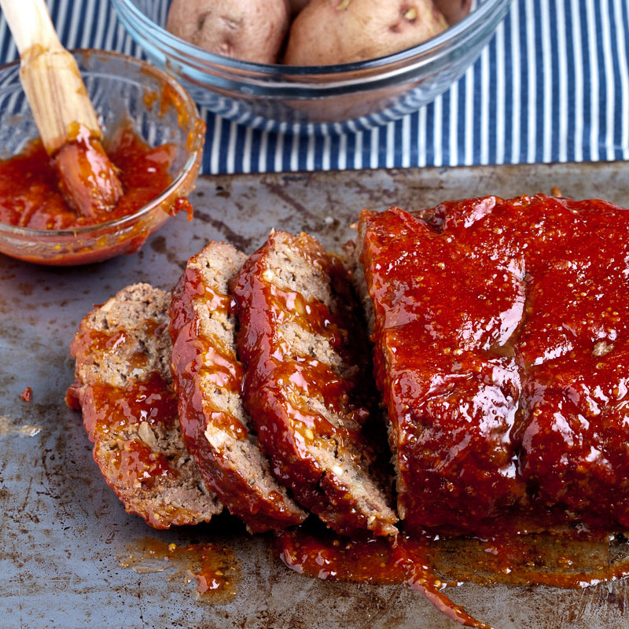

Meatloaf Recipe

Description
Amazing homemade Meatloaf Recipe. The meatloaf is so tender and juicy on the inside with a sweet and tangy sauce that glazes the meatloaf and adds so much flavor!
Ingredients
- Ground beef
- Onion
- 2 large eggs
- 3 garlic gloves
- 3 tbsp ketchup
- 3 tbsp fresh parsley, finely chopped
- 3/4 cup Panko breadcrumbs
- 1 and a half tsp salt, or to taste
- 1 and a half tsp italian seasoning
- Fourth tsp ground black pepper
- Half tsp ground paprika
Steps
- Line a 9”x5” loaf pan with parchment paper and preheat oven to 375°F.
- In a large bowl, add all of the ingredients for the meatloaf. Mix well to combine.
- Add meat to the loaf pan, gently press meat down and shape evenly and bake meatloaf at 375˚F for 40 minutes.
- In a small bowl, mix all of the ingredients together for the sauce. Spread the sauce over meatloaf then return to oven and bake additional 15-20 minutes or until the internal temperature is 160˚F. Rest meatloaf 10 minutes before slicing. Drizzle with baking juices from the pan.